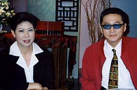

李敖專訪李美葵 還原尹案幕後真相
真相政經新聞網即日起播出李敖專訪尹清楓遺孀李美葵，李敖也送給立誓破案的陳水扁總統一句話：「小心玩火自焚！」

記者：江佩芬 ︱攝影︰真相｜台北 報導∣08月09日 20:38
尹清楓命案發生至今將近7年仍未破案，這件空前的軍事醜聞及懸案，在新政府上任之後，又再度成為眾所矚目的焦點。蒐證功力一流的李敖，再度專訪尹清楓的遺孀李美葵，兩人針對本案層層疑點提出強而有力的証據。李美葵表示：「我相信陳水扁會還我們一個公道！」
真相政經新聞網從8月8日起，連續4天製作《李敖顛倒眾生—尹案大追擊》特別節目，由李大師出馬，再度專訪李美葵。而在本週六（12日）晚間10點，也將4集專訪內容集合成「完整版」，再播一次。李敖並積極邀請主動調查尹案的立委李慶華接受專訪，持續追蹤幕後真相。
其實，早在民國84年，李敖就曾經在節目中訪問李美葵，當時李美葵對於執政黨以及軍方十分不滿，並且痛心呼籲大家要還尹清楓一個清白。5年後的今天，案子還沒破，執政黨已經換人做做看，李美葵對陳水扁充滿了期待。
不過，根據李美葵提供的第一手相關證據，李敖一一分析其背後所牽涉的重大內幕，他認為包括國民黨高層、前總統李登輝都牽涉在內，而對於總統陳水扁日前立誓要破尹案的聲明，李敖則送他一句話：「小心玩火自焚！」(2000/08/09/明日報)